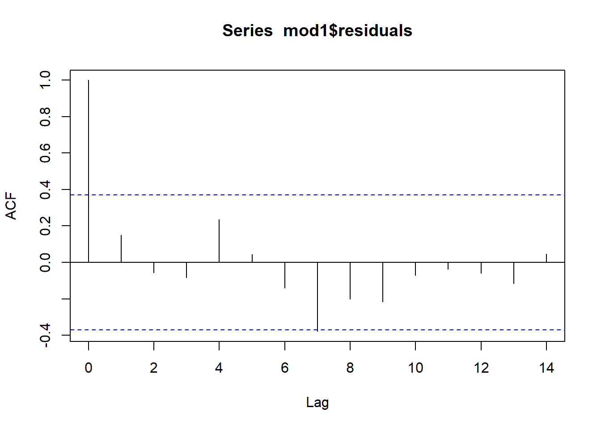
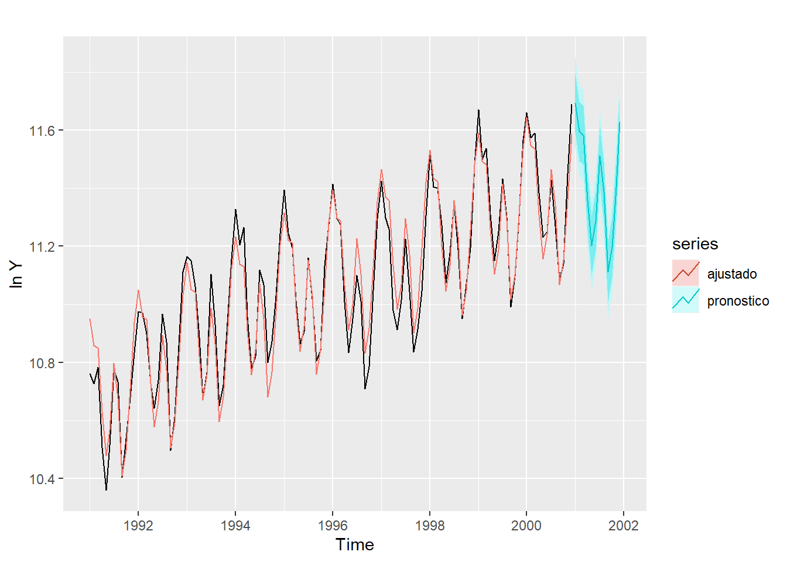

library(ggplot2)
library(forecast)
library(fpp2)
library(plotly)
library(car)
library(astsa)Tema 2.3. Series de tiempo para pronóstico. Laboratorio 2
Curso: Decisiones Estadísticas y Administrativas
1 librerías
2 Suavizamiento exponencial simple
2.1 Serie mensual de defunciones de Costa Rica de los años 2001 y 2002.
defunciones<-read.csv("defunciones.csv",sep=",")
y<-ts(defunciones$defunciones,start=c(2001,1),frequency=12)
autoplot(y) ses1 <- ses(y)
names(ses1) [1] "model" "mean" "level" "x" "upper" "lower"
[7] "fitted" "method" "series" "residuals"ses1$modelSimple exponential smoothing
Call:
ses(y = y)
Smoothing parameters:
alpha = 1e-04
Initial states:
l = 1275.5442
sigma: 62.7718
AIC AICc BIC
278.8813 280.0813 282.4155 ses1$fitted #valores ajustados Jan Feb Mar Apr May Jun Jul Aug
2001 1275.544 1275.553 1275.546 1275.549 1275.552 1275.549 1275.549 1275.558
2002 1275.574 1275.583 1275.570 1275.574 1275.568 1275.560 1275.553 1275.553
Sep Oct Nov Dec
2001 1275.567 1275.569 1275.577 1275.574
2002 1275.543 1275.543 1275.544 1275.542ses1$residuals #residuos Jan Feb Mar Apr May
2001 90.4558265 -68.5532193 21.4536362 33.4514908 -23.5518544
2002 83.4255945 -124.5827483 39.4297104 -59.5742327 -79.5682751
Jun Jul Aug Sep Oct
2001 -3.5494992 87.4508558 93.4421104 22.4327660 70.4305226
2002 -73.5603181 0.4470381 -95.5530066 -6.5434510 12.4572034
Nov Dec
2001 -22.5765206 1.4257371
2002 -17.5440424 18.4577121ses1 <- ses(y,h=12)
names(ses1) [1] "model" "mean" "level" "x" "upper" "lower"
[7] "fitted" "method" "series" "residuals"ses1$modelSimple exponential smoothing
Call:
ses(y = y, h = 12)
Smoothing parameters:
alpha = 1e-04
Initial states:
l = 1275.5442
sigma: 62.7718
AIC AICc BIC
278.8813 280.0813 282.4155 ses1 Point Forecast Lo 80 Hi 80 Lo 95 Hi 95
Jan 2003 1275.544 1195.099 1355.989 1152.514 1398.575
Feb 2003 1275.544 1195.099 1355.989 1152.514 1398.575
Mar 2003 1275.544 1195.099 1355.989 1152.514 1398.575
Apr 2003 1275.544 1195.099 1355.989 1152.514 1398.575
May 2003 1275.544 1195.099 1355.989 1152.514 1398.575
Jun 2003 1275.544 1195.099 1355.989 1152.514 1398.575
Jul 2003 1275.544 1195.099 1355.989 1152.514 1398.575
Aug 2003 1275.544 1195.099 1355.989 1152.514 1398.575
Sep 2003 1275.544 1195.099 1355.989 1152.514 1398.575
Oct 2003 1275.544 1195.099 1355.989 1152.514 1398.575
Nov 2003 1275.544 1195.099 1355.989 1152.514 1398.575
Dec 2003 1275.544 1195.099 1355.989 1152.514 1398.575autoplot(ses1) +
autolayer(fitted(ses1), series="ajustado") +
ylab("defunciones") + xlab("mes")3 Método de Holt
3.1 Serie de graduados del ITCR de 1975-2002.
itcrgrad<-read.csv("ITCR.csv",sep=",")
y<-ts(itcrgrad$graduados,start=1975)
autoplot(y) holt1 <- holt(y)
holt1 Point Forecast Lo 80 Hi 80 Lo 95 Hi 95
2003 1059.090 951.6131 1166.568 894.7181 1223.463
2004 1121.038 1004.0455 1238.030 942.1135 1299.962
2005 1182.985 1047.0016 1318.968 975.0163 1390.954
2006 1244.932 1080.5203 1409.344 993.4858 1496.379
2007 1306.880 1105.9475 1507.812 999.5804 1614.179
2008 1368.827 1124.7250 1612.929 995.5052 1742.149
2009 1430.774 1137.9697 1723.579 982.9683 1878.580
2010 1492.722 1146.4746 1838.969 963.1825 2022.261
2011 1554.669 1150.7999 1958.538 937.0045 2172.334
2012 1616.616 1151.3515 2081.881 905.0552 2328.178names(holt1) [1] "model" "mean" "level" "x" "upper" "lower"
[7] "fitted" "method" "series" "residuals"holt1$modelHolt's method
Call:
holt(y = y)
Smoothing parameters:
alpha = 0.2151
beta = 0.2149
Initial states:
l = -12.771
b = 40.3513
sigma: 83.865
AIC AICc BIC
347.0211 349.7484 353.6822 holt1$mean # pronóstico con 5 pasos para adelante.Time Series:
Start = 2003
End = 2012
Frequency = 1
[1] 1059.090 1121.038 1182.985 1244.932 1306.880 1368.827 1430.774 1492.722
[9] 1554.669 1616.616holt1$x # serie originalTime Series:
Start = 1975
End = 2002
Frequency = 1
[1] 27 55 54 171 182 34 165 280 179 192 207 216 205 220 245
[16] 245 269 394 472 516 429 576 713 832 735 876 834 1084holt1$fitted # valores ajustadosTime Series:
Start = 1975
End = 2002
Frequency = 1
[1] 27.58029 67.68209 102.45544 119.12081 168.51615 212.55105 176.90931
[8] 174.55030 220.09589 225.28968 225.00812 224.14324 223.65007 216.88891
[15] 215.47686 226.09054 238.48524 259.93406 332.46759 436.16408 544.17843
[22] 585.49483 647.50167 739.71481 857.52261 902.79683 962.90129 973.34215autoplot(holt1) +
autolayer(fitted(holt1), series="ajustado") +
ylab("defunciones") + xlab("mes")4 Método multiplicativo de Holt-Winters
turistas<-read.csv("turistas.csv",sep=";")
y<-ts(turistas$turistas,start=c(1991,1),frequency=12)
ts.plot(y)
ht1 <- hw(y,seasonal="multiplicative")
names(ht1) [1] "model" "mean" "level" "x" "upper" "lower"
[7] "fitted" "method" "series" "residuals"ht1$modelHolt-Winters' multiplicative method
Call:
hw(y = y, seasonal = "multiplicative")
Smoothing parameters:
alpha = 0.645
beta = 0.0152
gamma = 1e-04
Initial states:
l = 40683.2372
b = 789.1426
s = 1.185 0.9434 0.7671 0.7137 0.935 1.0741
0.8724 0.8106 0.9515 1.1889 1.2062 1.3522
sigma: 0.053
AIC AICc BIC
2542.932 2548.932 2590.319 ht2 <- hw(y,seasonal="additive")
ht2$modelHolt-Winters' additive method
Call:
hw(y = y, seasonal = "additive")
Smoothing parameters:
alpha = 0.8569
beta = 0.002
gamma = 1e-04
Initial states:
l = 37772.7803
b = 970.2137
s = 11616.08 -4230.257 -14931.3 -18767.21 -3318.433 5345.735
-9079.857 -13063.73 -3395.759 12544.86 13808.45 23471.42
sigma: 4616.604
AIC AICc BIC
2616.306 2622.306 2663.694 autoplot(y) +
autolayer(ht1, series="HW multiplicativo", PI=FALSE, size = 1.2) +
autolayer(ht2, series="HW aditivo", PI=FALSE, size = 1.2) +
xlab("fecha") +
ylab("turistas") +
ggtitle("Turistas que ingresaron a CR") +
guides(colour=guide_legend(title="pronóstico"))accuracy(ht1) ME RMSE MAE MPE MAPE MASE
Training set -114.3084 3239.923 2580.033 -0.3986991 3.995136 0.4245259
ACF1
Training set 0.008128625accuracy(ht2) ME RMSE MAE MPE MAPE MASE
Training set -394.643 4297.824 3312.546 -0.7003905 5.216058 0.5450557
ACF1
Training set -0.0036037565 Modelo de Regresión
Cambios porcentuales trimestrales (tasas de crecimiento) del gasto de consumo personal real (Y) e ingresos disponibles(X), para EE.UU. desde 1970 a 2016.
data(uschange)
autoplot(uschange[,1:5], facets = TRUE, colour=TRUE) +
ylab("") + xlab("Year") +
guides(colour="none")
uschange %>%
as.data.frame() %>%
GGally::ggpairs()Registered S3 method overwritten by 'GGally':
method from
+.gg ggplot2
mod0 <- lm(
Consumption ~ Income + Production + Unemployment + Savings,
data=uschange)
summary(mod0)
Call:
lm(formula = Consumption ~ Income + Production + Unemployment +
Savings, data = uschange)
Residuals:
Min 1Q Median 3Q Max
-0.88296 -0.17638 -0.03679 0.15251 1.20553
Coefficients:
Estimate Std. Error t value Pr(>|t|)
(Intercept) 0.26729 0.03721 7.184 1.68e-11 ***
Income 0.71449 0.04219 16.934 < 2e-16 ***
Production 0.04589 0.02588 1.773 0.0778 .
Unemployment -0.20477 0.10550 -1.941 0.0538 .
Savings -0.04527 0.00278 -16.287 < 2e-16 ***
---
Signif. codes: 0 '***' 0.001 '**' 0.01 '*' 0.05 '.' 0.1 ' ' 1
Residual standard error: 0.3286 on 182 degrees of freedom
Multiple R-squared: 0.754, Adjusted R-squared: 0.7486
F-statistic: 139.5 on 4 and 182 DF, p-value: < 2.2e-16mod0 <- tslm(
Consumption ~ Income + Production + Unemployment + Savings,
data=uschange)
summary(mod0)
Call:
tslm(formula = Consumption ~ Income + Production + Unemployment +
Savings, data = uschange)
Residuals:
Min 1Q Median 3Q Max
-0.88296 -0.17638 -0.03679 0.15251 1.20553
Coefficients:
Estimate Std. Error t value Pr(>|t|)
(Intercept) 0.26729 0.03721 7.184 1.68e-11 ***
Income 0.71449 0.04219 16.934 < 2e-16 ***
Production 0.04589 0.02588 1.773 0.0778 .
Unemployment -0.20477 0.10550 -1.941 0.0538 .
Savings -0.04527 0.00278 -16.287 < 2e-16 ***
---
Signif. codes: 0 '***' 0.001 '**' 0.01 '*' 0.05 '.' 0.1 ' ' 1
Residual standard error: 0.3286 on 182 degrees of freedom
Multiple R-squared: 0.754, Adjusted R-squared: 0.7486
F-statistic: 139.5 on 4 and 182 DF, p-value: < 2.2e-16autoplot(uschange[,'Consumption'], series="Data") +
forecast::autolayer(fitted(mod0), series="Fitted") +
xlab("Year") + ylab("") +
ggtitle("Cambio porcentual de gastos de consumo en EE.UUU ") +
guides(colour=guide_legend(title=" "))checkresiduals(mod0)
Breusch-Godfrey test for serial correlation of order up to 8
data: Residuals from Linear regression model
LM test = 14.874, df = 8, p-value = 0.061636 Modelos de tendencia
6.1 Ejemplo con graduados de ITCR de 1975 a 2002
itcrgrad<-read.csv("ITCR.csv",sep=",")
y<-ts(itcrgrad$graduados,start=1975)
autoplot(y) 6.2 Crear variables independientes
tiempo<-seq(1,length(y))
tiempo2<-tiempo^2
datos.itcrgrad<-data.frame(y,tiempo,tiempo2)
mod1<-lm(y~tiempo+tiempo2,datos.itcrgrad)
summary(mod1)
Call:
lm(formula = y ~ tiempo + tiempo2, data = datos.itcrgrad)
Residuals:
Min 1Q Median 3Q Max
-117.932 -49.683 4.506 43.234 155.390
Coefficients:
Estimate Std. Error t value Pr(>|t|)
(Intercept) 127.0021 43.6818 2.907 0.00753 **
tiempo -12.7887 6.9427 -1.842 0.07736 .
tiempo2 1.5612 0.2323 6.720 4.83e-07 ***
---
Signif. codes: 0 '***' 0.001 '**' 0.01 '*' 0.05 '.' 0.1 ' ' 1
Residual standard error: 71.61 on 25 degrees of freedom
Multiple R-squared: 0.944, Adjusted R-squared: 0.9395
F-statistic: 210.6 on 2 and 25 DF, p-value: 2.268e-16mod.ts1<-tslm(y~trend+trend^2) #note la salida no incluye al tendencia al cuadrado.
summary(mod.ts1)
Call:
tslm(formula = y ~ trend + trend^2)
Residuals:
Min 1Q Median 3Q Max
-183.89 -78.69 -23.75 90.52 273.76
Coefficients:
Estimate Std. Error t value Pr(>|t|)
(Intercept) -99.373 45.678 -2.175 0.0389 *
trend 32.486 2.752 11.805 6.03e-12 ***
---
Signif. codes: 0 '***' 0.001 '**' 0.01 '*' 0.05 '.' 0.1 ' ' 1
Residual standard error: 117.6 on 26 degrees of freedom
Multiple R-squared: 0.8428, Adjusted R-squared: 0.8367
F-statistic: 139.3 on 1 and 26 DF, p-value: 6.026e-12mod.ts2<-tslm(y~trend+I(trend^2))
summary(mod.ts2)
Call:
tslm(formula = y ~ trend + I(trend^2))
Residuals:
Min 1Q Median 3Q Max
-117.932 -49.683 4.506 43.234 155.390
Coefficients:
Estimate Std. Error t value Pr(>|t|)
(Intercept) 127.0021 43.6818 2.907 0.00753 **
trend -12.7887 6.9427 -1.842 0.07736 .
I(trend^2) 1.5612 0.2323 6.720 4.83e-07 ***
---
Signif. codes: 0 '***' 0.001 '**' 0.01 '*' 0.05 '.' 0.1 ' ' 1
Residual standard error: 71.61 on 25 degrees of freedom
Multiple R-squared: 0.944, Adjusted R-squared: 0.9395
F-statistic: 210.6 on 2 and 25 DF, p-value: 2.268e-16par(mfrow = c(1,1))
e<-mod1$residuals6.3 Normalidad
hist(e)shapiro.test(e)
Shapiro-Wilk normality test
data: e
W = 0.97509, p-value = 0.72116.4 Homoscedasticidad
ts.plot(e)lmtest::bptest(mod1)
studentized Breusch-Pagan test
data: mod1
BP = 1.0404, df = 2, p-value = 0.59446.5 Autocorrelación
lag1.plot(e)
acf(mod1$residuals)
durbinWatsonTest(mod1) #solamente considera un rezago lag Autocorrelation D-W Statistic p-value
1 0.1488158 1.576164 0.112
Alternative hypothesis: rho != 0checkresiduals(mod1)
Breusch-Godfrey test for serial correlation of order up to 6
data: Residuals
LM test = 3.9215, df = 6, p-value = 0.68737 Regresión con series estacionales
turistas<-read.csv("turistas.csv",sep=";")
y<-ts(turistas$turistas,start=c(1991,1),frequency=12)7.1 transformacion logarítmica
w<-log(y)
autoplot(y) 
autoplot(w)
tiempo<-seq(1,length(y))
tiempo2<-tiempo^2
mes<-rep(seq(1,12),10)
mes<-as.factor(mes)
datos1<-data.frame(w,tiempo,tiempo2,mes)
mod1<-lm(w~tiempo+tiempo2+mes,datos1)
summary(mod1)
Call:
lm(formula = w ~ tiempo + tiempo2 + mes, data = datos1)
Residuals:
Min 1Q Median 3Q Max
-0.188378 -0.048245 0.007514 0.052592 0.135323
Coefficients:
Estimate Std. Error t value Pr(>|t|)
(Intercept) 1.094e+01 2.940e-02 372.182 < 2e-16 ***
tiempo 8.617e-03 7.707e-04 11.181 < 2e-16 ***
tiempo2 -1.992e-05 6.169e-06 -3.229 0.001654 **
mes2 -1.013e-01 3.243e-02 -3.125 0.002297 **
mes3 -1.181e-01 3.243e-02 -3.641 0.000422 ***
mes4 -3.467e-01 3.243e-02 -10.690 < 2e-16 ***
mes5 -5.050e-01 3.244e-02 -15.568 < 2e-16 ***
mes6 -4.243e-01 3.244e-02 -13.077 < 2e-16 ***
mes7 -2.037e-01 3.245e-02 -6.278 7.65e-09 ***
mes8 -3.326e-01 3.246e-02 -10.248 < 2e-16 ***
mes9 -6.091e-01 3.247e-02 -18.760 < 2e-16 ***
mes10 -5.293e-01 3.248e-02 -16.299 < 2e-16 ***
mes11 -3.263e-01 3.249e-02 -10.043 < 2e-16 ***
mes12 -1.042e-01 3.250e-02 -3.207 0.001775 **
---
Signif. codes: 0 '***' 0.001 '**' 0.01 '*' 0.05 '.' 0.1 ' ' 1
Residual standard error: 0.07251 on 106 degrees of freedom
Multiple R-squared: 0.9439, Adjusted R-squared: 0.937
F-statistic: 137.3 on 13 and 106 DF, p-value: < 2.2e-16levels(datos1$mes) [1] "1" "2" "3" "4" "5" "6" "7" "8" "9" "10" "11" "12"datos2 <- within(datos1, mes <- relevel(mes, ref = 12))
levels(datos2$mes) [1] "12" "1" "2" "3" "4" "5" "6" "7" "8" "9" "10" "11"mod2 <- lm(w~tiempo+tiempo2+mes,datos2)
summary(mod2)
Call:
lm(formula = w ~ tiempo + tiempo2 + mes, data = datos2)
Residuals:
Min 1Q Median 3Q Max
-0.188378 -0.048245 0.007514 0.052592 0.135323
Coefficients:
Estimate Std. Error t value Pr(>|t|)
(Intercept) 1.084e+01 3.022e-02 358.594 < 2e-16 ***
tiempo 8.617e-03 7.707e-04 11.181 < 2e-16 ***
tiempo2 -1.992e-05 6.169e-06 -3.229 0.00165 **
mes1 1.042e-01 3.250e-02 3.207 0.00177 **
mes2 2.885e-03 3.249e-02 0.089 0.92940
mes3 -1.386e-02 3.248e-02 -0.427 0.67035
mes4 -2.425e-01 3.247e-02 -7.470 2.39e-11 ***
mes5 -4.008e-01 3.246e-02 -12.348 < 2e-16 ***
mes6 -3.201e-01 3.245e-02 -9.863 < 2e-16 ***
mes7 -9.952e-02 3.244e-02 -3.067 0.00274 **
mes8 -2.284e-01 3.244e-02 -7.041 1.98e-10 ***
mes9 -5.049e-01 3.243e-02 -15.565 < 2e-16 ***
mes10 -4.251e-01 3.243e-02 -13.108 < 2e-16 ***
mes11 -2.220e-01 3.243e-02 -6.847 5.09e-10 ***
---
Signif. codes: 0 '***' 0.001 '**' 0.01 '*' 0.05 '.' 0.1 ' ' 1
Residual standard error: 0.07251 on 106 degrees of freedom
Multiple R-squared: 0.9439, Adjusted R-squared: 0.937
F-statistic: 137.3 on 13 and 106 DF, p-value: < 2.2e-167.2 Pronóstico
mod1<-lm(w~tiempo+tiempo2+mes,datos1)
summary(mod1)
Call:
lm(formula = w ~ tiempo + tiempo2 + mes, data = datos1)
Residuals:
Min 1Q Median 3Q Max
-0.188378 -0.048245 0.007514 0.052592 0.135323
Coefficients:
Estimate Std. Error t value Pr(>|t|)
(Intercept) 1.094e+01 2.940e-02 372.182 < 2e-16 ***
tiempo 8.617e-03 7.707e-04 11.181 < 2e-16 ***
tiempo2 -1.992e-05 6.169e-06 -3.229 0.001654 **
mes2 -1.013e-01 3.243e-02 -3.125 0.002297 **
mes3 -1.181e-01 3.243e-02 -3.641 0.000422 ***
mes4 -3.467e-01 3.243e-02 -10.690 < 2e-16 ***
mes5 -5.050e-01 3.244e-02 -15.568 < 2e-16 ***
mes6 -4.243e-01 3.244e-02 -13.077 < 2e-16 ***
mes7 -2.037e-01 3.245e-02 -6.278 7.65e-09 ***
mes8 -3.326e-01 3.246e-02 -10.248 < 2e-16 ***
mes9 -6.091e-01 3.247e-02 -18.760 < 2e-16 ***
mes10 -5.293e-01 3.248e-02 -16.299 < 2e-16 ***
mes11 -3.263e-01 3.249e-02 -10.043 < 2e-16 ***
mes12 -1.042e-01 3.250e-02 -3.207 0.001775 **
---
Signif. codes: 0 '***' 0.001 '**' 0.01 '*' 0.05 '.' 0.1 ' ' 1
Residual standard error: 0.07251 on 106 degrees of freedom
Multiple R-squared: 0.9439, Adjusted R-squared: 0.937
F-statistic: 137.3 on 13 and 106 DF, p-value: < 2.2e-16try(
pronostico<-forecast(mod1) #error
)Error in as.data.frame(newdata) :
el argumento "newdata" está ausente, sin valor por omisiónmod3<-tslm(w~trend+I(trend^2)+season)
summary(mod3)
Call:
tslm(formula = w ~ trend + I(trend^2) + season)
Residuals:
Min 1Q Median 3Q Max
-0.188378 -0.048245 0.007514 0.052592 0.135323
Coefficients:
Estimate Std. Error t value Pr(>|t|)
(Intercept) 1.094e+01 2.940e-02 372.182 < 2e-16 ***
trend 8.617e-03 7.707e-04 11.181 < 2e-16 ***
I(trend^2) -1.992e-05 6.169e-06 -3.229 0.001654 **
season2 -1.013e-01 3.243e-02 -3.125 0.002297 **
season3 -1.181e-01 3.243e-02 -3.641 0.000422 ***
season4 -3.467e-01 3.243e-02 -10.690 < 2e-16 ***
season5 -5.050e-01 3.244e-02 -15.568 < 2e-16 ***
season6 -4.243e-01 3.244e-02 -13.077 < 2e-16 ***
season7 -2.037e-01 3.245e-02 -6.278 7.65e-09 ***
season8 -3.326e-01 3.246e-02 -10.248 < 2e-16 ***
season9 -6.091e-01 3.247e-02 -18.760 < 2e-16 ***
season10 -5.293e-01 3.248e-02 -16.299 < 2e-16 ***
season11 -3.263e-01 3.249e-02 -10.043 < 2e-16 ***
season12 -1.042e-01 3.250e-02 -3.207 0.001775 **
---
Signif. codes: 0 '***' 0.001 '**' 0.01 '*' 0.05 '.' 0.1 ' ' 1
Residual standard error: 0.07251 on 106 degrees of freedom
Multiple R-squared: 0.9439, Adjusted R-squared: 0.937
F-statistic: 137.3 on 13 and 106 DF, p-value: < 2.2e-16pronostico<-forecast(mod3,h=12)
pronostico Point Forecast Lo 80 Hi 80 Lo 95 Hi 95
Jan 2001 11.69308 11.59176 11.79439 11.53732 11.84883
Feb 2001 11.59552 11.49401 11.69704 11.43945 11.75159
Mar 2001 11.58251 11.48078 11.68425 11.42611 11.73892
Apr 2001 11.35756 11.25560 11.45952 11.20080 11.51431
May 2001 11.20294 11.10074 11.30513 11.04582 11.36006
Jun 2001 11.28729 11.18484 11.38974 11.12979 11.44479
Jul 2001 11.51140 11.40870 11.61411 11.35351 11.66930
Aug 2001 11.38605 11.28307 11.48902 11.22774 11.54436
Sep 2001 11.11311 11.00986 11.21636 10.95437 11.27185
Oct 2001 11.19632 11.09278 11.29985 11.03714 11.35549
Nov 2001 11.40279 11.29895 11.50663 11.24315 11.56243
Dec 2001 11.62822 11.52407 11.73236 11.46811 11.78833autoplot(w) +
ylab("ln Y") +
autolayer(mod3$fitted.values, series = "ajustado") +
autolayer(pronostico, series = "pronostico")
checkresiduals(mod3)
Breusch-Godfrey test for serial correlation of order up to 24
data: Residuals from Linear regression model
LM test = 69.582, df = 24, p-value = 2.529e-06y<-ts(turistas$turistas,start=c(1991,1),frequency=12)
y.train<-window(y,start=c(1991,1),end=c(1999,12))
y.test<-window(y,start=c(2000,1),end=c(2000,12))
mod4<-tslm(y.train~trend+I(trend^2)+season)
summary(mod4)
Call:
tslm(formula = y.train ~ trend + I(trend^2) + season)
Residuals:
Min 1Q Median 3Q Max
-16096.7 -3411.3 833.9 3542.2 15635.4
Coefficients:
Estimate Std. Error t value Pr(>|t|)
(Intercept) 6.285e+04 2.312e+03 27.188 < 2e-16 ***
trend 4.557e+02 6.746e+01 6.755 1.18e-09 ***
I(trend^2) -5.924e-01 5.994e-01 -0.988 0.325522
season2 -8.809e+03 2.552e+03 -3.452 0.000836 ***
season3 -1.006e+04 2.552e+03 -3.942 0.000156 ***
season4 -2.517e+04 2.552e+03 -9.860 3.65e-16 ***
season5 -3.402e+04 2.553e+03 -13.325 < 2e-16 ***
season6 -2.947e+04 2.553e+03 -11.540 < 2e-16 ***
season7 -1.574e+04 2.554e+03 -6.162 1.77e-08 ***
season8 -2.419e+04 2.555e+03 -9.470 2.46e-15 ***
season9 -3.947e+04 2.556e+03 -15.446 < 2e-16 ***
season10 -3.551e+04 2.556e+03 -13.890 < 2e-16 ***
season11 -2.476e+04 2.558e+03 -9.680 8.82e-16 ***
season12 -8.906e+03 2.559e+03 -3.481 0.000761 ***
---
Signif. codes: 0 '***' 0.001 '**' 0.01 '*' 0.05 '.' 0.1 ' ' 1
Residual standard error: 5414 on 94 degrees of freedom
Multiple R-squared: 0.9158, Adjusted R-squared: 0.9041
F-statistic: 78.6 on 13 and 94 DF, p-value: < 2.2e-16pronostico<-forecast(mod4,h=12)
pronostico Point Forecast Lo 80 Hi 80 Lo 95 Hi 95
Jan 2000 105476.42 97842.25 113110.58 93731.85 117220.99
Feb 2000 96993.44 89340.12 104646.77 85219.39 108767.49
Mar 2000 96067.58 88394.02 103741.15 84262.40 107872.77
Apr 2000 81283.94 73589.07 88978.81 69445.98 93121.90
May 2000 72754.64 65037.40 80471.87 60882.27 84627.00
Jun 2000 77627.00 69886.35 85367.64 65718.62 89535.38
Jul 2000 91675.80 83910.71 99440.89 79729.81 103621.80
Aug 2000 83540.16 75749.59 91330.73 71554.97 95525.36
Sep 2000 68577.97 60760.90 76395.04 56552.01 80603.93
Oct 2000 72856.77 65012.19 80701.35 60788.49 84925.05
Nov 2000 83927.02 76053.94 91800.11 71814.89 96039.16
Dec 2000 100091.16 92188.58 107993.74 87933.65 112248.67accuracy(pronostico) ME RMSE MAE MPE MAPE MASE
Training set -3.368499e-14 5050.477 4024.289 -0.3434747 6.726303 0.6524221
ACF1
Training set 0.623945accuracy(pronostico,y.test) ME RMSE MAE MPE MAPE MASE
Training set -3.368499e-14 5050.477 4024.289 -0.3434747 6.726303 0.6524221
Test set 4.766925e+03 8704.755 6962.741 4.0412577 7.106520 1.1288072
ACF1 Theil's U
Training set 0.6239450 NA
Test set 0.5177485 0.5156388